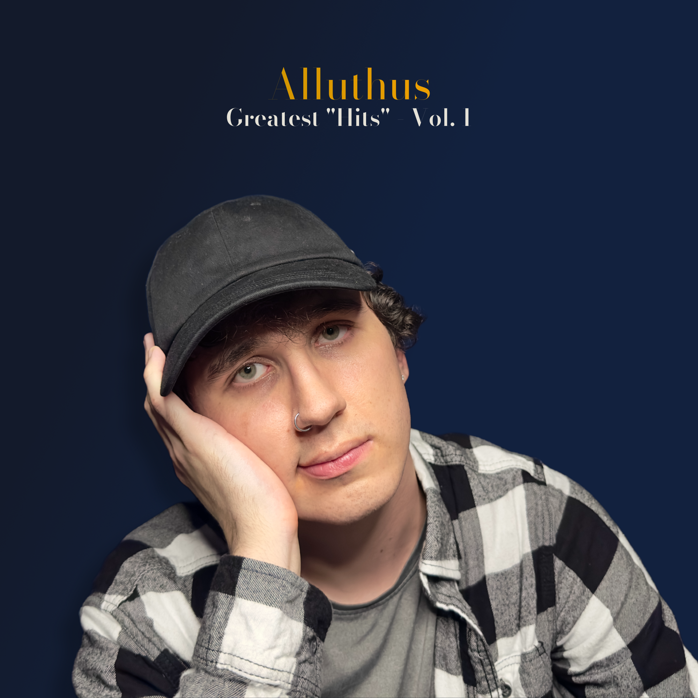

five years of mid music
Celebrating the fifth anniversary of STiBaRC Records as well as fifth anniversary of the 'Alluthus era', this album collects the greatest "hits" from Joseph Madril's catalog of instrumental tracks under the Alluthus alias. From "Golden Days," "Undertow," "music," and more, this album also collects tracks released in 2017 under the 'Verso' alias. With no new material, this twenty-track album of GarageBand-mashed loops is the perfect listen–whether for study or simply making your ears bleed!
Greatest "Hits" - Vol. 1
release date: 21 march 2025
listen nowtrack listing
credits & personnel
A STiBaRC Records release; This Compilation ℗&© 2025 STiBaRC LLC/℗ 2017(1, 11, 13), 2022(3) JM3 Music/℗ 2020(2, 7) JM3 Music, STiBaRC LLC/℗ 2020(4, 8), 2021(6, 17, 18, 19), 2022(9, 10, 12, 14-16), 2023(5, 15, 20) STiBaRC LLC . Marketed & distributed by STiBaRC LLC.
Catalog code: 8489055